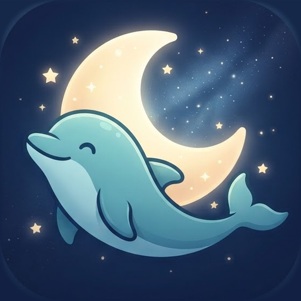

DolphSleep
Uykunu, rüyalarını ve gününü tek yerde takip et.
Kaydır ↓
🌙 Uyku
Tek dokunuşla uyku takibi
Yatarken 🌙, kalkarken ☀️ butonuna bas. Gerisini DolphSleep hesaplıyor.
- ⏱️Ortalama uykun, uyku borcun ve düzen puanın
- 🔥Hedef saatlere uydukça büyüyen seri
- 🔔Yatma saatinden önce hatırlatma
💭 Rüyalar · Yapay zekâ
İki kelime yaz, rüyan hikâyeye dönüşsün
Sabah aklında kalanı aceleyle yaz, yapay zekâ onu senin adınla akıcı bir hikâyeye çevirsin. Her rüya takvimde saklanır.
SENİN YAZDIĞINdenizde yüzüyodum biri vardı uzakta korktum sonra yanına gittim✨ ↓DOLPHSLEEPRafet denizde yüzerken uzakta birini gördü. Önce tedirgin oldu, sonra merakı ağır bastı ve ona doğru yüzmeye başladı…
☀️ Gün
Gün içinde nasıl hissettiğini kaydet
Herhangi bir anı 1–10 arası puanla, duygunu seç (öfke, kaygı, mutluluk, huzur…), istersen not bırak.
- 📈Günün duygu çizgisi
- 🌙Akşam “Günü kapat” de, yapay zekâ gününü özetlesin
🔒 Gizlilik
Rüyaların sadece senin
İstersen rüyalarına şifre koy. Rüyaların telefonunda şifrelenip öyle kaydedilir; uygulamayı yapan dahil kimse okuyamaz.
- 👤Rüyaların ve gün notların sadece senin hesabına açık
- 🚫Reklam yok, verilerin hiçbir yere satılmaz
Bu gece
başla 🐬
Ücretsiz. Telefonuna uygulama gibi yüklenir, Google hesabınla girersin.
🌙 DolphSleep'i açÜcretsizReklamsızAndroid & iPhoneYapay zekâ destekli
Rafet Emre Türkoğlu tarafından tasarlandı